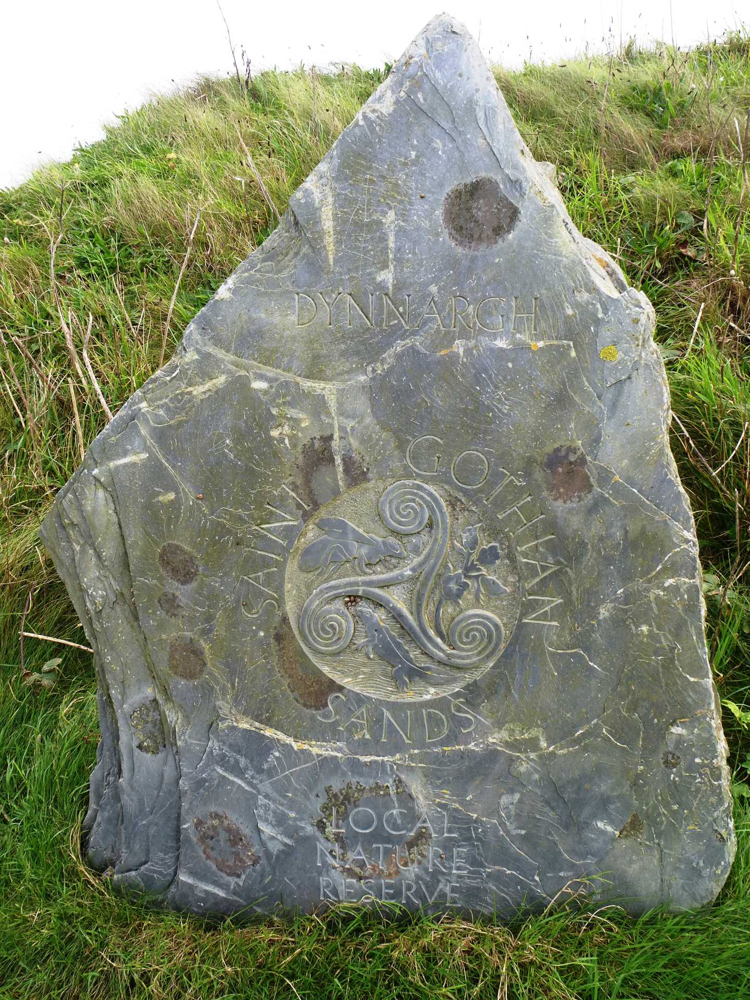
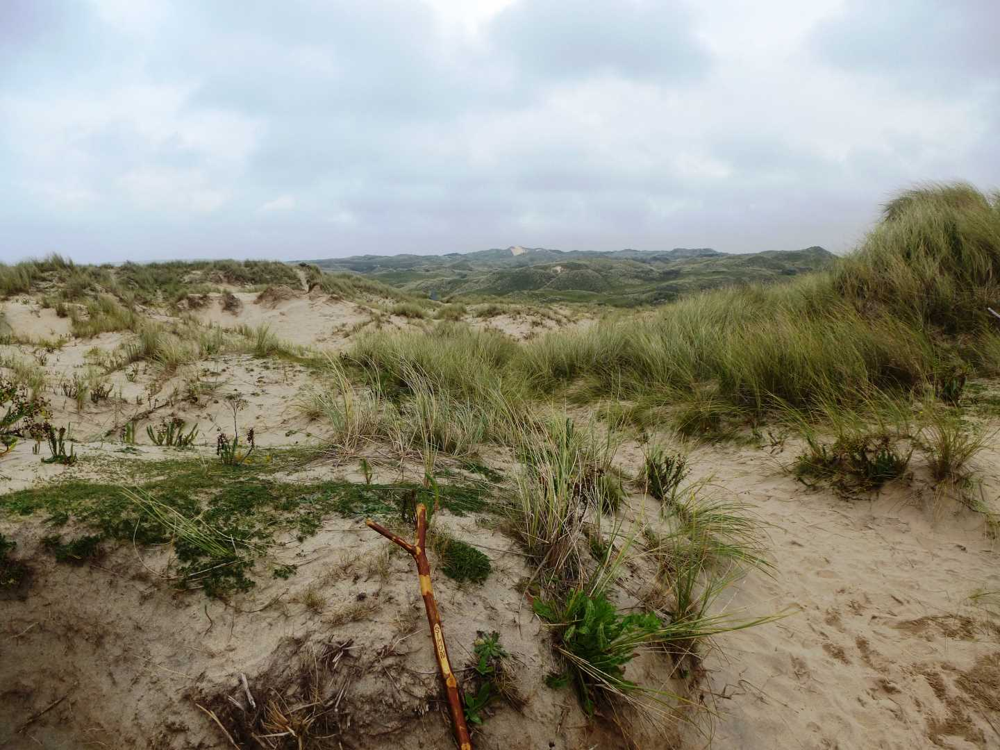

Start Ref: 581 432
End Ref: 554 385
Distance: 4 miles
Time: 2hrs
A Walk Requiring a Shuttle Run
We started this walk from the National Trust car park at Godrevy and headed South along the track back towards the car park by Gwithian Beach. Rather than walking on to the beach we turned left over the footbridge and followed the track right, onto St. Gothian Nature Reserve, where we were welcomed (in Cornish) by a lovely slate marker.
This marker we found to be the first of many, and in fact we would be able to follow them for almost the entire length of our walk, with the next being visible from the last in most cases, and the path being well trodden (sand between the grasses).
Apart from the views of St. Ives Bay and the Towans, this walk is worth doing if only for these amazing path markers.
This well marked path leads us over the undulating dunes (Towans) of Gwithian, Upton, Phillack and Mexico, and over the bottom section of two of the holiday camps.
In many places the Towans have been fenced off to allow nature to reclaim them, but there is still plenty of space to feel free.
If the tide is right (always check the timetables) you can join the beach from any of the numerous paths that connect to them, which also allows for beachgoers, lifeguards and many of the surf schools to gain access.
After a couple of hours we rounded Black Cliffs, and were just able to make out the spire of Lelant Church, across the Hayle Estuary, and where we `found` a pub right on the footpath in which to enjoy a good pint and a bite.